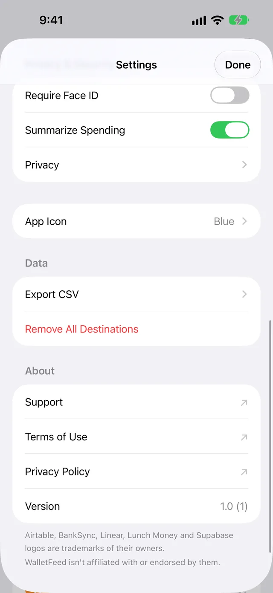
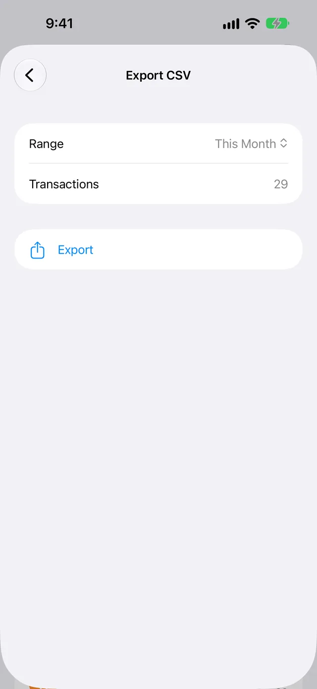

Make a CSV file with Export CSV
In WalletFeed, Export CSV makes a CSV file of your Apple Card transactions from a period that you select. You can save the file in Files or send it to a different app. WalletFeed Pro is not necessary for Export CSV.
Save your transactions in a CSV file
-
On your iPhone, open WalletFeed.
-
Tap Settings (the gear button) at the top of the screen.

-
In the Data section, tap Export CSV.

-
Tap Range.
-
Select a period.

Transactions shows the number of transactions in the period.
-
Tap Export.
The iOS menu opens with the name of the file, for example
Apple Card This Month.csv. -
Tap Save to Files.
-
Select a folder.
-
Tap Save.
At step 7, you can also select AirDrop, Mail or a different app in the menu. The file goes only to the app or person that you select.
Periods in Range
When you open Export CSV, Range shows This Month. You can select one of these periods:
| Period | Transactions in the file |
|---|---|
| This Month | The transactions from the first day of this month. |
| Last Month | All the transactions of the month before this month. |
| Last 90 Days | The transactions from the last 90 days. |
| This Year | The transactions from January 1 of this year. |
| All | All the transactions that WalletFeed can read in Wallet. |
The file
The name of the file has the period in it, for example Apple Card Last Month.csv or Apple Card All.csv. Each file name starts with Apple Card. But a file can also have Apple Cash or Savings transactions.
The file has the transactions from each Wallet account that WalletFeed can read. The Account column shows the account of each transaction. Wallet accounts tells you how to change the accounts that WalletFeed can read.
The first row has the names of the columns. Each row after it has one transaction. The rows are in date sequence. The newest transaction is first. The file also has pending transactions.
The file does not change after WalletFeed makes it. For new transactions, or for a pending charge after it posts, you must make a new file.
WalletFeed makes the file on your iPhone and does not keep it. You can open the file in Numbers or Excel.
Columns in the file
The file has these columns, from left to right:
| Column | Data |
|---|---|
| Date | The date of the transaction in the time zone of your iPhone, for example 2026-10-28. |
| Posted Date | The date when the transaction posted. This cell is empty until the transaction posts. |
| Merchant | The name of the merchant. If Wallet has no merchant name, this cell has the text from Description. |
| Description | The text of the transaction in Wallet. |
| Original Description | The text of the transaction on the card statement. |
| Amount | The value, for example -23.40. The value of a debit is less than zero. The value of a credit is more than zero. |
| Currency | The currency code, for example USD. |
| Direction | debit or credit. For example, purchases and fees are debit, and payments and refunds are credit. |
| Status | The status in Wallet, for example pending or authorized before the charge posts, booked after it posts, or rejected for a declined charge. |
| Type | The type of transaction in Wallet, for example pointOfSale for a purchase, refund, transfer or fee. |
| Category | The WalletFeed category, for example Groceries, Travel or Cash & Transfers. |
| MCC | The merchant category code, for example 5411. If Wallet has no code, this cell is empty. |
| Account | The name of the Wallet account, for example Apple Card. |
| Foreign Amount | For a transaction in a different currency, the value in this currency. |
| Foreign Currency | The code of the currency in Foreign Amount. |
| WalletFeed ID | The ID of the transaction. A transaction has the same ID in each file from Export CSV. |
Each value in Amount and Foreign Amount has two digits after the decimal point and no commas, for example 1250.00. The file is UTF-8 text in the RFC 4180 CSV format.
If the first character in Merchant, Description, Original Description or Account is =, +, - or @, WalletFeed puts an apostrophe (') before this character. Thus, a spreadsheet does not use the text as a formula.
Get a file that WalletFeed updates
With WalletFeed Pro, WalletFeed can save your transactions in a CSV file in a folder. This file has the same columns. WalletFeed then updates the file when your transactions change. Background Sync gives the times of these updates.
WalletFeed Pro is a subscription with a 1-week free trial, or a one-time Lifetime purchase.
If there is a problem
If you cannot tap Export
You cannot tap Export while WalletFeed reads your transactions, or when the period has no transactions.
- Wait until Transactions shows a number.
- If the number is 0, select a different period in Range.
If each period has 0 transactions
WalletFeed cannot read the transactions of your Wallet accounts.
If Settings › Wallet in WalletFeed shows Choose Accounts, do these steps:
-
In WalletFeed, tap Settings.
-
In the Wallet section, tap Choose Accounts.
The Wallet access screen opens.
-
Select the accounts that WalletFeed reads.
-
Tap Share.
If Settings › Wallet in WalletFeed shows Open Settings, do these steps:
- On your iPhone, open the Settings app.
- Tap Privacy & Security › Wallet › WalletFeed.
- Select the accounts that WalletFeed reads.
- Open WalletFeed.
Wallet accounts gives all the steps.
If the file has sample transactions
When Sample Data is on, WalletFeed shows two months of sample transactions. The file then has only sample transactions.
- In WalletFeed, tap Settings.
- In the Data section, set Sample Data to off.
- Tap Export CSV.
- Select the period in Range.
- Tap Export.
If the file does not have a new transaction
The file does not change after WalletFeed makes it.
- In WalletFeed, tap Settings.
- In the Data section, tap Export CSV.
- Select the period in Range.
- Tap Export.
Related
Updated October 30, 2026